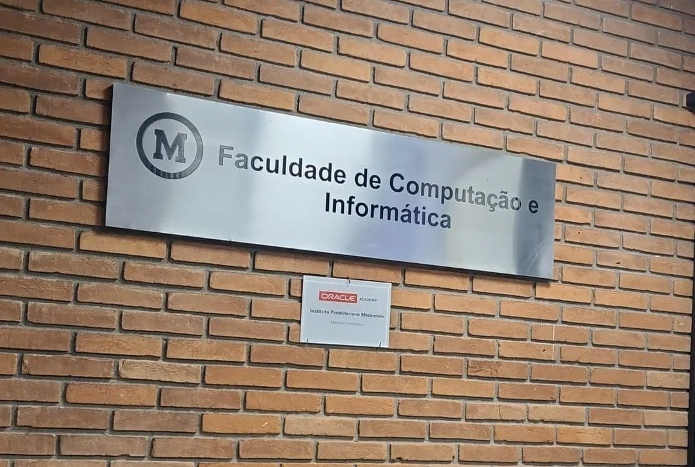
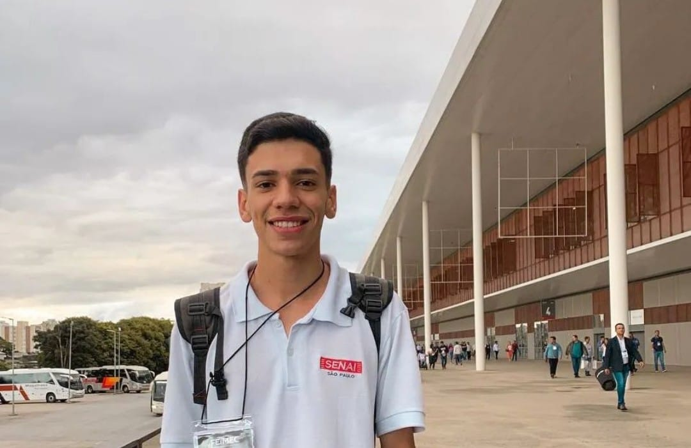
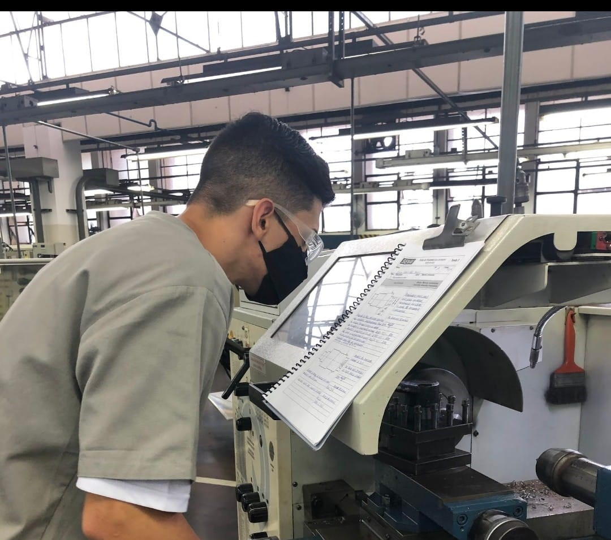

01 de Fevereiro de 2023
Aprovação na Mackenzie e ínicio na programação

No final de 2022 me inscrevi para participar do vestibular da Universidade Presbiteriana Mackenzie no curso de Análise Desenvolvimento de Sistemas. No começo de 2023 recebi a notícia que fui aprovado no vestibular e então iniciei meus estudos na universidade. Junto com a minha graduação comecei a estudar o inglês pois é de extrema necessidade atualmente.
01 de Junho de 2022
Virada de chave

Em Junho 2022 conclui o curso do Senai e em Julho do mesmo ano comecei atuar no mercado de trabalho como Operador de Torno CNC e em dezembro de 2022 fui promovido para trabalhar no setor de Metrologia em uma metalúrgica do setor Automotivo. Porém nesse meio tempo conheci a programação e foi algo que me fascinou, e no meu ponto de vista, essa é a profissão atual e do futuro, e foi ai que decidi começar minha transição de carreira.
01 de Janeiro de 2021
Ínicio no Senai

No ano de 2020 ingressei no Senai no curso de Aprendizagem Industrial (CAI) Mecânico de Usinagem. Por mais que posteriormente eu mudaria de área, pois descobri que tecnologia e programação é minha paixão, o curso do Senai foi a grande virada de chave na minha vida profissional. Nesse período conheci muitas pessoas e conheci grandes referências profissionais, que fizeram eu entender que eu tenho potencial para me tornar um excelente profissional em qualquer área que eu atuasse. Neste curso aprendi além de habilidades técnicas, também habilidades pessoais como ser resiliente, determinado, focado a ter postura profissional e exercer meus trabalhos com excelência.